Как из сайта-визитки «стеллажи полного цикла» получился инструмент, который называет цену за паллетоместо, показывает, сколько поместится в конкретное помещение, и отдаёт спецификацию до того, как человек дошёл до телефона.
Исследование рынка, разбор старого сайта, решение, приёмка и прогноз — полностью, со всеми экранами.
Старый сайт отвечал на вопрос «кто вы такие». Новый отвечает на вопрос, с которым человек приходит на самом деле: сколько товара влезет в мой склад и сколько это будет стоить. Между этими двумя вопросами лежит всё, что описано дальше в этой презентации.
На карточке каждого из шести типов — цена за секцию из прайса: от 1 200 000 сум за архивный, 3 620 000 за среднегрузовой, 7 032 128 за паллетный. До этого цен на сайте не было нигде.
Вопросы, которые менеджер задаёт по телефону, задаёт калькулятор. Ядро расчёта уже существовало внутри генератора КП — его вывели наружу.
Не «полный цикл», а «150 тонн на складе в Ташкенте — привезём завтра». Проверяемое утверждение вместо оценочного.
В Узбекистане ни у одного игрока нет четырёх вещей: цены за паллетоместо, онлайн-проектирования, спецификации до звонка и кейсов с цифрами в м² и паллетоместах. Самообслуживание в 3D существует только в мебели и в США. Это и есть свободная позиция: первый в СНГ конфигуратор паллетных стеллажей со спецификацией и ценой.
Дизайн начинался не с макета, а с чтения. Сначала — кто покупает и чего боится, потом — как это устроено у других, и только потом — как это должно выглядеть. Каждое решение в третьей части ссылается на строку из первой.
260 постов с 24.09.2025 по 10.09.2026, 66 названных объектов с описанием, разнесены вручную по сегментам. Плюс 31 расшифрованный отзыв: 8 видео, 17 переписок, 6 голосовых, и 11 кейсов с цифрами.
Оценки 29 · 22 · 61 · 67 · 38 из 100. Продаж — ноль из пяти при трёх тёплых и двух горячих лидах. Теряют не на трафике, а в разговоре: в двух звонках грузоподъёмность названа 400 кг вместо 2–3 тонн.
Первый экран, социальное доказательство, способ приёма заявки и слабое место каждого. Снято 100 файлов скриншотов: герой и полная страница отдельно.
Переписка инженеров по шести типам стеллажей и мезонину: реальные размеры, шаг колонны, глубины каналов, уникальные страницы КП. Отсюда все числа расчёта — не из интернета.
Каждый блок старого сайта снят отдельно на 1600 и на 390 пикселей, разобран по назначению и сверен с FAQ и текстами на противоречия.
Ни одна цифра на сайте не придумана. Всё, что можно посчитать, считается из каталога, прайса и формул; всё, что должен подтвердить RaxPro, помечено и вынесено в отдельный список. Сайт, который обещает нагрузку «до 4 тонн», не имеет права ошибиться в ней так, как ошиблись в двух звонках из пяти.
Ситуация покупки и семь страхов · четыре сегмента по 66 объектам · 45 первых экранов рынка · библиотека из 38 решений по 12 категориям · восемь ходов и восемь анти-паттернов.
Прежде чем переносить чужие решения, нужно понять, чем эта покупка отличается от покупки футболки или подписки. Шесть критериев ниже — фильтр: решение с чужого сайта берётся, только если ситуация покупки там совпадает.
| Критерий | RaxPro |
|---|---|
| Что продаём | Физический продукт плюс проект под помещение: замер → проект → поставка → монтаж. Это не товар с полки — это инженерная работа, у которой есть чертёж. |
| Чей кошелёк | Деньги компании: склад, магазин, завод. Реже — свои, если это гараж или подсобка. |
| Чем рискует | Деньгами — от 1,2 млн до сотен млн сум. Безопасностью — обрушение стеллажа это товар и люди. Сроками запуска склада. |
| Обратимость | Низкая. Отверстия в бетонном полу, размер подогнан под помещение, переделка — это новые рамы. |
| Длина решения | Дни или недели, 2–4 контакта, сравнение 3–5 поставщиков преимущественно по цене. |
| Кто решает | Директор или завхоз с согласованием у собственника. В малом бизнесе — сам владелец. |
Соседние ниши, где покупка устроена так же — необратимая, дорогая, с проектом под помещение. Их приёмы работают здесь, а приёмы интернет-магазина одежды не работают.
Страх подрядчика: «сдадут ли в срок», «не бросят ли на середине».
Проект под конкретное помещение плюс визуализация до оплаты.
Самообслуживание: человек собирает сам и видит цену, не спрашивая.
Спецификация, тендер, документ на руки как условие сделки.
Покупка необратимая и рискованная — значит, главная валюта сайта не «красиво», а доказательство. Каждый блок обязан снимать конкретное сомнение, иначе он занимает экран зря.
Собраны из FAQ самого raxpro.uz, пяти расшифрованных звонков в отдел продаж и тестовых КП. Всё, что не закрывает один из этих семи пунктов, на сайт не попадало — это и был фильтр отбора блоков.
| # | Вопрос клиента | Что за ним стоит | Чем закрыт на новом сайте |
|---|---|---|---|
| 1 | «Сколько это стоит?» | Нет ориентира цены до звонка — человек уходит туда, где цены написаны в сумах. | Цена за секцию на каждой карточке типа, калькулятор, блок «из чего складывается цена». |
| 2 | «Выдержит ли?» | Нагрузка на ярус, толщина металла, анкеровка. Прямой страх обрушения. | «4 т на ярус» в bento, пять пунктов безопасности, сравнение с кустарной сваркой. |
| 3 | «Влезет ли в моё помещение и сколько паллетомест?» | Ключевой вопрос склада. Ответа не даёт никто в стране. | Первый экран прямо про это, калькулятор вместимости, конструктор. |
| 4 | «Сделают ли в срок?» | Запуск склада привязан к дате: аренда идёт, товар едет. | «150 тонн на складе — привезём завтра», этапы со сроками, «под ключ за 5 дней». |
| 5 | «Кустарные сварщики или завод?» | Страх переплатить за то же железо — или купить ржавое. | Отдельный блок сравнения с фотографией сварного шва и таблицей из девяти пар. |
| 6 | «Что будет после заявки?» | Спам, навязчивые звонки или тишина. | Колонка у формы: что происходит после отправки и в какой срок. |
| 7 | «Гарантия на бумаге или на словах?» | Десять лет звучат одинаково и у завода, и у сварщика из гаража. | «10 лет по договору. На рынке обычно — до 5», ISO-сертификаты сканами. |
Пять звонков в отдел продаж разобраны платформой: 29 · 22 · 61 · 67 · 38 из 100. Продаж — ноль из пяти, при этом три лида тёплые и два горячих. В двух звонках менеджер назвал грузоподъёмность 400 кг вместо 2–3 тонн — то есть страх №2 был не просто не закрыт, а усилен. В одном звонке потребность («оптовый склад лекарств») так и не выяснили и сразу назвали цену.
Теряют не на трафике, а в разговоре. Значит, ответы должны стоять до разговора и не зависеть от того, кто снял трубку: нагрузка, цена, вместимость, срок и гарантия — написаны на странице цифрами, а не рассказываются по телефону. Это и есть главный ход всей пересборки — перенести вопрос менеджера в интерфейс.
Сегменты собраны не по отрасли и не по размеру компании, а по тому, какую работу клиент нанимает стеллажи выполнить и по каким критериям судит, что получилось. Источник — весь канал отзывов за год, а не витрина лучших кейсов.
Первая версия карты строилась на 31 расшифрованном отзыве — то есть на тех, кто написал «спасибо» менеджеру. Проверка всего канала сдвинула картину: домашних установок оказалось в пять раз больше, паллетных — в четыре, а магазинов меньше. Видеоотзывы снимают в торговых залах, потому что там красиво, — и сегмент A выглядел крупнее, чем он есть. Если бы карту строили по отзывам, сайт был бы сделан не для того сегмента.
Около 20 из 66: Андижан ×6, Сурхандарья ×3, Самарканд, Хорезм, Каракалпакстан, Навои, Фергана, Коканд, Чуст, Джизак. При этом у половины региональных постов подпись «отправлено», а не «смонтировано» — разрыв цепочки на монтаже в области подтверждается данными, а не ощущением.
Дистрибьютор, интернет-магазин, склад ресторана или сети, оптовик, склад при магазине, аптечный склад, архив организации. Товар в коробках, собирают руками, без погрузчика.
Разместить в 3–4 раза больше товара на той же площади и быстро находить нужное, чтобы не снимать второй склад и принимать поставки без задержек.
Теперь на месте одной единицы размещаем три-четыре — четыре яруса. Увидели в Instagram, привезли за один день.
Владелец продуктового или хозяйственного магазина — Сергели, Ургут, Паркент, махалля. Открывает первую точку или переоборудует зал. Часто «впервые в этой сфере».
Выставить весь товар на витрину так, чтобы покупатель сам находил и брал, чтобы магазин продавал больше с той же площади.
Выбор. Новичок «мучился: искал в интернете, спрашивал знакомых». Нет понятной единицы измерения — сколько погонных метров нужно на зал 40 м². Критерий №1 здесь — продажи, а не вместимость, поэтому коммуникация и кейсы нужны отдельные.
Первой проблемой при открытии магазина были стеллажи. Работа на 10–15 дней закрылась за один день.
Завод, холодильный склад, логистика, сеть кофеен с центральным складом. Товар на паллетах, есть погрузчик, есть ЛПР и договор. 9 объектов — вчетверо больше, чем в расшифрованных отзывах.
Использовать высоту помещения под паллеты, чтобы не расширять дорогую площадь — особенно холод — и чтобы погрузчик работал безопасно.
Частник: кладовая, подвал многоэтажки, дача, гараж, небольшой автосервис. Одна-четыре секции, платит сам, часто в рассрочку. Каждый пятый пост канала.
Навести порядок в кладовой или гараже, чтобы вещи не портились и было не стыдно перед гостями и клиентами.
Чек не окупает выезд инженера и замер. 13 таких выездов за год — это 13 дней бригады. Ценность сегмента — рекомендации, а не деньги.
Сегмент стоит фокуса, только если ответ «да» на все четыре. Чеки — из прайса, без маржи по факту.
| Сегмент | Ценность доказана | Маржа закрывается | Спрос создаётся | Размер | Вердикт |
|---|---|---|---|---|---|
| B · Склад | ×3–4 вместимости, монтаж за день | 36–110 млн, простой монтаж | Instagram, сарафан, регионы | 37 из 66 | Фокус. Целевой сегмент |
| A · Магазин | +30–40 % товара, 7 видео | Торговые «по проекту», чек ниже | Открытие точки — чёткий триггер | 7 из 66 | Держать. Своя коммуникация |
| C · Паллеты | Площадь ×2, 4 м, 12 часов | Самый большой чек | Длинная сделка, нужен ЛПР | 9 из 66 | Растить из B. Апгрейд |
| D · Дом | Доволен | 1,2–4 млн не окупают выезд | Рекомендации, рассрочка | 13 из 66 | Самообслуживание. Каталог |
Сорок пять сайтов сняты целиком: первый экран и вся страница отдельно, 100 файлов. Ниже — контактные листы всей доски. Дальше каждый слой разобран таблицей: что на первом экране, чем доказывают, как принимают заявку и где слабое место.
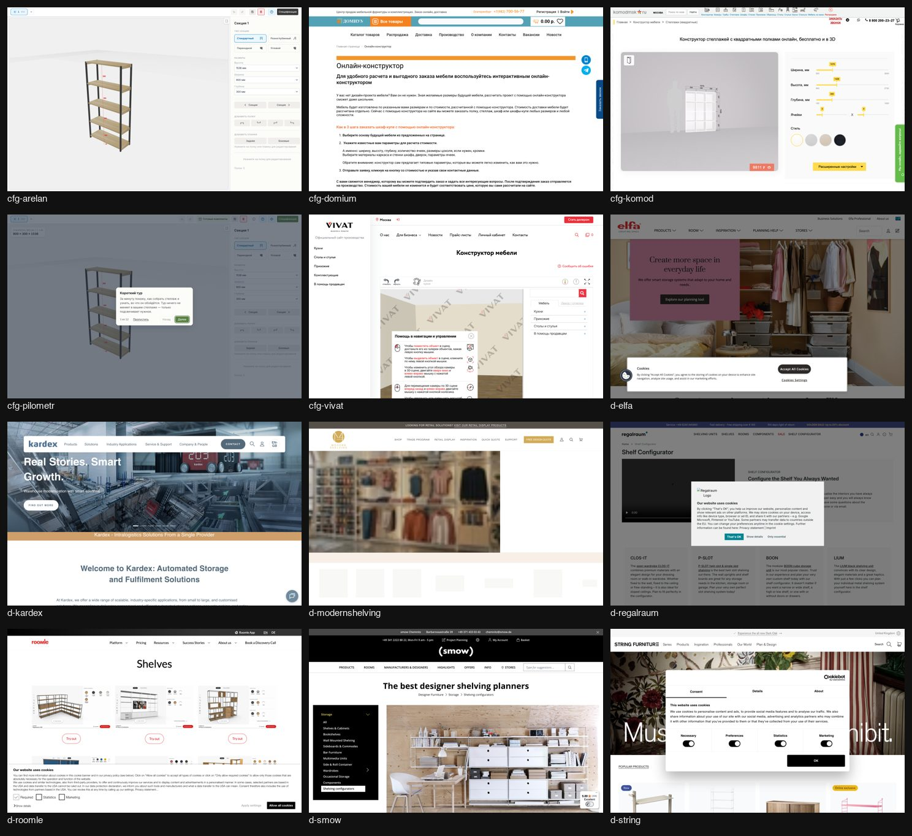
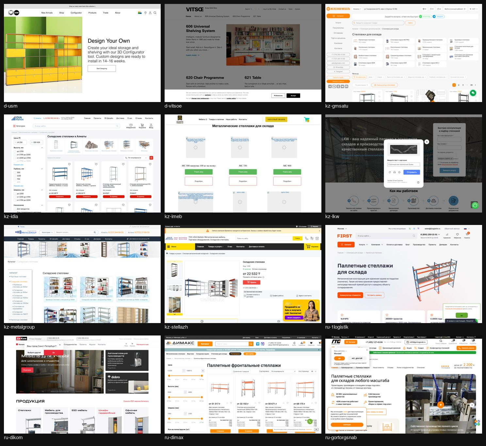
Локальный слой и ближайшие рынки. Здесь видно главное: один и тот же движок интернет-магазина у большинства площадок Казахстана и Узбекистана — рынок узнаётся как шаблон, и любая непохожая страница уже выделяется.
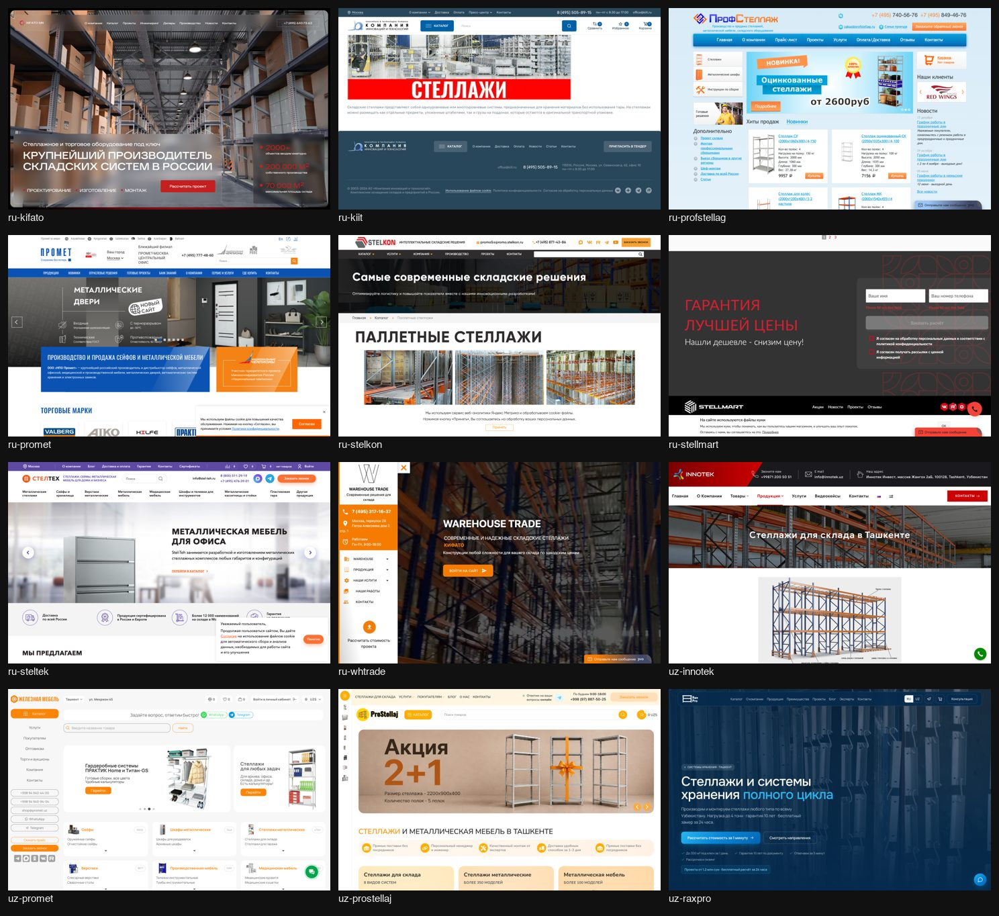
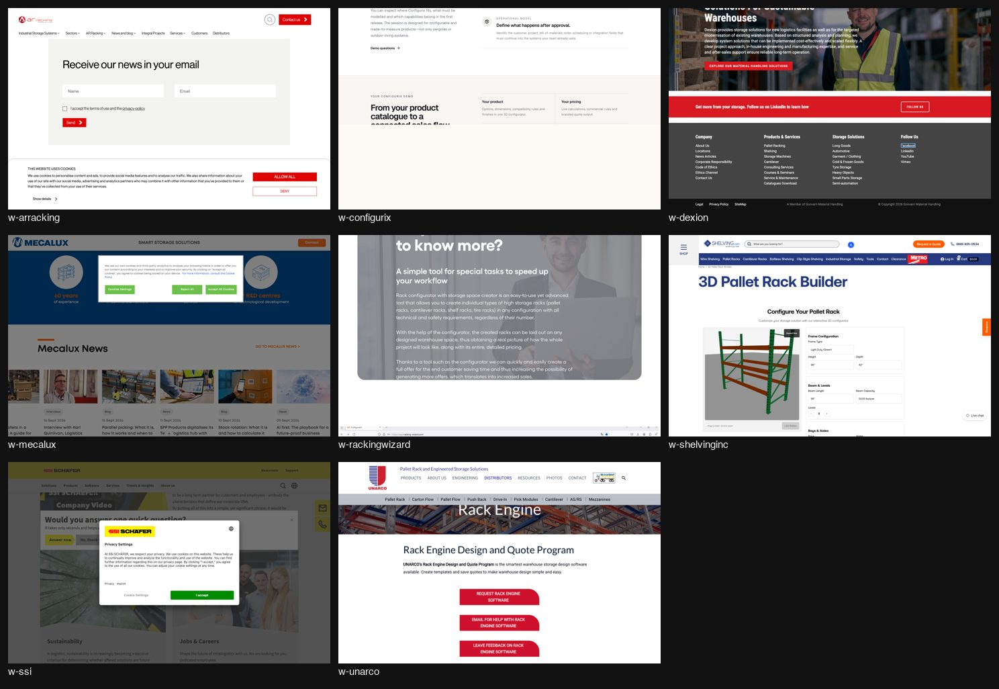
Слой витрин на Tilda не снят: поиск по витрине через API недоступен. Он заменён российскими сайтами того же бюджета — profstellag, stel-teh, dimax. Один узбекский сайт (aviastal.uz) отдаёт 403 роботу и потому не снят вовсе — это, кстати, и есть его слабое место: он не попадает в поиск по картинкам. Ещё один (mirvalino.uz) перенаправляет на Facebook: сайта фактически нет.
Прямые конкуренты RaxPro в стране. Только один из них — настоящий соперник за клиента.
| Компания | Первый экран | Соцдоказательство | Приём заявки | Слабое место |
|---|---|---|---|---|
| raxpro.uz (было) | Тёмно-синий герой, «полного цикла», квиз из 4 вопросов, чипы «замер 24 ч / 10 лет» | 1000+ проектов, ISO×3, логотипы, основатель с фото, TG-канал отзывов | Квиз → форма, TG, WhatsApp | Нет цен и каталога на главной, нет «за паллетоместо», карточки направлений без размеров, пустые блоки при загрузке |
| prostellaj.uz | Баннер «Акция 2+1», e-commerce, цены в сумах | Google 5.0 / Yandex 4.7, благодарственные письма, Tegen · Artel · Knauf · Ecco, кейс 646 м² / 1344 паллетоместа | Корзина, «ответим онлайн за 5 минут», TG-канал | Шаблон интернет-магазина, слабые фото (белые рендеры), нет проектирования онлайн |
| promet.uz | Каталог-витрина сейфов и мебели, поиск, WhatsApp / Telegram | нет | Корзина, «Заказать звонок» | Стеллажи — одна из 20 категорий, нет отраслевой экспертизы |
| innotek.uz | Фото склада, H1 «Стеллажи для склада в Ташкенте», SEO-текст | Видеокейсы в отдельном разделе | Только телефон и контакты | Текстовая простыня вместо страницы, нет цен, нет расчёта |
| aviastal.uz | 403 для робота | — | — | Сайт закрыт от краулеров → не в поиске по картинкам |
| mirvalino.uz | редирект на Facebook | — | — | Сайта фактически нет |
Настоящий конкурент один — prostellaj.uz. Он выигрывал у старого raxpro.uz не дизайном, а тремя вещами: цены в сумах прямо в каталоге, внешние оценки Google и Yandex, и категории «по поводу» — для гаража, для шин, для ПВЗ, для аптеки. Ни одна из трёх не требует производства или инженеров. Все три закрываются на сайте.
Рынок на пятнадцать лет старше узбекского и уже прошёл путь «каталог → цена → самообслуживание». Здесь лежат готовые ответы на страхи 1, 3 и 7.
| Компания | Первый экран | Соцдоказательство | Приём заявки | Слабое место |
|---|---|---|---|---|
| gortorgsnab.ru | Видео с производства, «цена от 2 200 ₽ за паллетоместо», 30 000+ проектов | Отзывы 4.8 / 13, клиенты Audi и McDonald's, «профиль стойки 85» на карточках | Корзина, «Заказать звонок», конфигуратор в меню, рассрочка 15 / 85 / 0 % | Дизайн уровня 2015 года, плотный каталог |
| 1logistik.ru | Иллюстрация-3D стеллажа, «Калькулятор стоимости» рядом с «Оставить заявку» | NPS 9,8 · 25 000+ проектов · с 2003 · видео с основателем · кейсы 3800 м² / 6839 паллетомест / 11,5 м | Квиз «какие данные вы знаете» с иллюстрацией, форма | Перегружен текстом, cookie-баннер, чат-виджет одновременно |
| kifato-mk.com | Тёмный editorial, фото цеха, цифры 2000+ объектов / 200 000 м² | Wildberries · Магнит · Яндекс · Пятёрочка, 9+ стран | «Рассчитать проект» | B2B-гигант: нет цен и нет самообслуживания |
| stellmart.ru | «Дарим расширенную гарантию до 7 лет, даже на б/у» | Магнит · X5 · Яндекс Маркет, сканы благодарственных писем, с 2008 | «Гарантия лучшей цены — нашли дешевле, снизим», выкуп стеллажей | Визуально устаревший магазин |
| stelkon.ru | Фото складов, «Получить бесплатный проект склада» | Фото реализованных проектов, сертификаты | Оранжевые CTA-полосы, FAQ про крепление к полу и схемы оплаты | Ничего интерактивного |
| dimaxmet.ru | Каталог с фильтрами по высоте, ширине и ярусам, цены | — | Корзина | Магазин-конструктор без проектирования |
| profstellag.ru | «Оцинкованные стеллажи от 2600 руб», хиты продаж | Red Wings в клиентах | Корзина, звонок | Шаблон 2010-х |
| whtrade.ru | Тёмный оранжевый, «Рассчитать стоимость проекта» | Дилер Kifato | Форма | Пустая главная |
| kiit.ru | Баннер «Стеллажи», тендерная подача | — | «Пригласить в тендер» | Каталог без цен |
| stel-teh.ru | Слайдер, доставка / сертификация / 12 000 позиций | — | Магазин | Шаблон |
| promet.ru | Слайдер сейфов и дверей | Бренды | Каталог | Стеллажи вторичны |
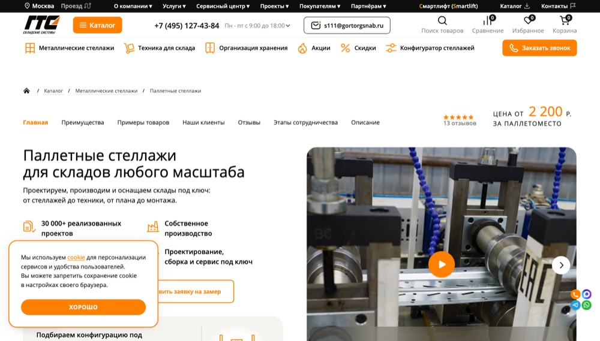
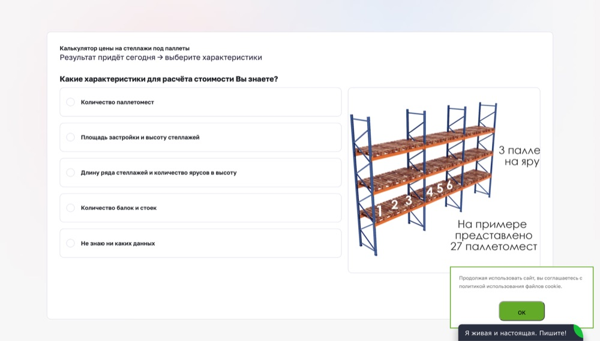
| Слой | Компания | Первый экран | Приём заявки | Слабое место |
|---|---|---|---|---|
| Казахстан · ближайший по устройству рынок | ||||
| KZ | idiamarket.kz | Категория с фильтрами цена / высота / глубина / ширина / нагрузка, цены в тенге, «3D Дизайн» в меню | Корзина, «Позвонить» | Шаблон |
| KZ | lkw-safe.kz | Тёмный герой, форма «Быстрая консультация», шаги «Как мы работаем» | Форма | Капча Yandex перекрывает форму |
| KZ | metalgroup.kz | Каталог с иконками типов | Корзина | Шаблон |
| KZ | stellazh.kz | Витрина маркетплейса Satu | Корзина | Не свой сайт |
| KZ | imebkz.kz | Карточки без картинок | «Узнать цену» | Битые изображения |
| KZ | almaty.gmsatu.com | Каталог «Железной мебели» — тот же движок, что у promet.uz | Корзина | Узнаётся как шаблон |
| Мир · большие системы и настоящие конфигураторы | ||||
| Мир | mecalux.com | Видео склада; страница продукта: продукт → преимущества → применения → галерея → отзывы → кейсы → конфигурации → компоненты → аксессуары | «Request information and/or a quote» | Cookie-стена, нет цен |
| Мир | shelving.com | 3D Pallet Rack Builder: рама → балки → ярусы → секции, живая спецификация с артикулами и суммой | Add to cart / Request a quote | Ортографический 3D, рынок США |
| Мир | racking-wizard.com | SaaS для продавцов: «create any rack, generate full sales offer» | Register | Инструмент, а не сайт продавца |
| Мир | configurix.com | 3D-конфигуратор склада как продукт: геометрия → стеллажи → цена → КП | Book a demo | Продаётся как софт |
| Мир | unarcorack.com | Программа расчёта нагрузок по запросу | Request software | Скрытый инструмент |
| Мир | ssi-schaefer · ar-racking · dexion | Корпоративные герои, «Up to 20 % more storage capacity» | Contact us | Нет самообслуживания |
| Дизайн · отсюда взята подача, а не отрасль | ||||
| Дизайн | usm.com | «Design your own» и 3D-конфигуратор, «ready to install in 14–16 weeks» | Start designing | — |
| Дизайн | vitsoe.com/606 | Одно фото, одна система, «Start small. Add to it. Reconfigure it», персональный планировщик, «мы не получаем комиссию» | Planner и консультант | — |
| Дизайн | regalraum.com | «Configure the shelf you always wanted», видео, 4 системы; в FAQ — «можно прислать эскиз?» | Конфигуратор → корзина | Cookie-стена |
| Дизайн | elfa · kardex · string · smow · modernshelving · roomle | «Create more space», «Real stories. Smart growth», обзоры планировщиков, бесплатный дизайн-сервис | Planning tool, free design service | — |
Не стиль, а обещание. Vitsoe говорит «начни с малого, дополняй, переставляй» — это в точности то, что отличает заводской стеллаж от сварного, и этот довод переехал в блок сравнения. USM привязывает обещание к сроку («готово к монтажу за 14–16 недель») — у RaxPro срок в разы короче, и это главный козырь, который старый сайт не называл цифрой. Regalraum держит в FAQ вопрос «а можно прислать эскиз?» — у RaxPro эскиз уже читает генератор КП, об этом вторая презентация.
Главный вопрос исследования был такой: существует ли конфигуратор стеллажей, в котором человек сам собирает конструкцию и видит цену? Ответ: существует — в мебели и в США. В складских стеллажах СНГ его нет ни у кого.
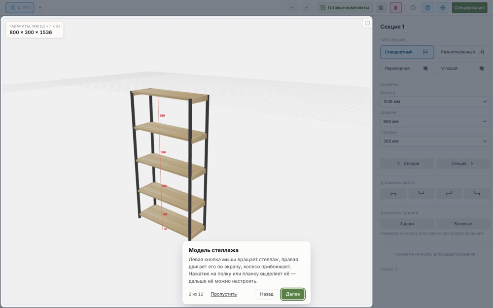
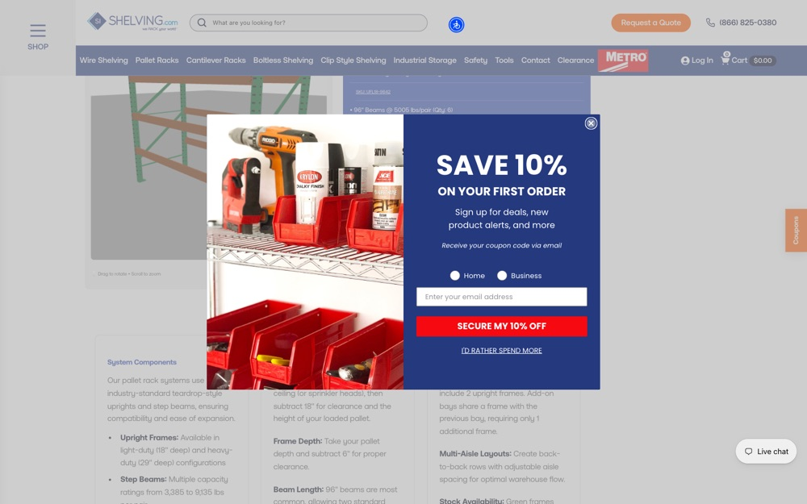
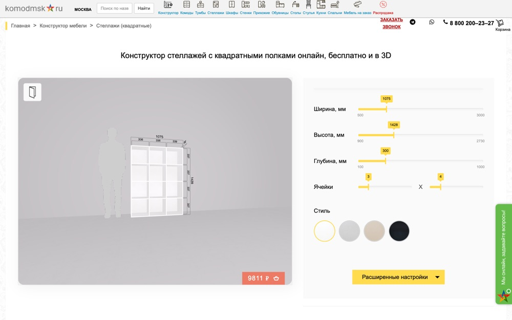
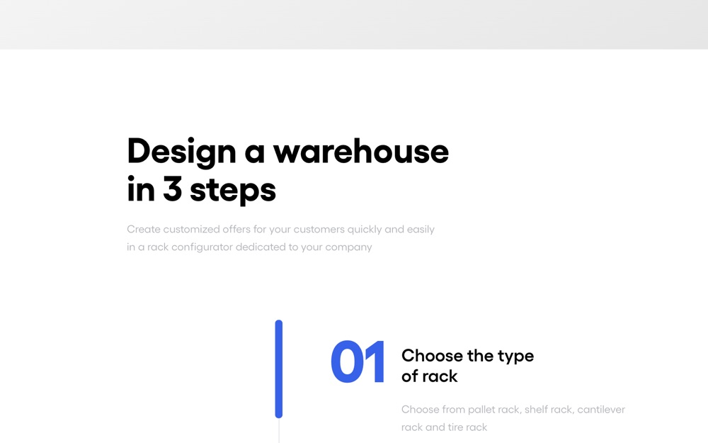
Ядро расчёта у RaxPro уже существует — оно считает КП внутри компании: раскладку по помещению, ярусы, спецификацию и цену. То есть самая дорогая часть конфигуратора написана. Её нужно было не построить, а вынести наружу — на публичную страницу. Отсюда и главный ход всей работы: сделать видимым то, что уже есть.
Единственная величина, в которой клиент может сравнить два предложения. Есть в Москве (ГТС — «от 2 200 ₽»), нет ни у кого в стране.
Ввести размеры помещения и увидеть раскладку. Есть у configurix и racking-wizard как продукт для продавцов, нет ни у одного продавца в регионе.
Список рам, балок, замков и анкеров с количеством. Есть у shelving.com в США. В СНГ — только после разговора с менеджером.
Не «сделали склад», а «3800 м² · 6839 паллетомест · 11,5 м». Есть у 1logistik и prostellaj, нет у RaxPro — хотя объекты такие есть.
Первый в СНГ конфигуратор паллетных стеллажей со спецификацией и ценой.
Это не лозунг, а описание пустой клетки на доске из 45 сайтов. Самообслуживание в 3D живёт только в мебели (Пилометр, КомодМск) и в США (Shelving.com). Складские стеллажи в России и Казахстане продаются каталогом и звонком. Тот, кто первым поставит расчёт на страницу, получает не «лучший дизайн», а другую единицу разговора с клиентом.
| Площадка | Цена видна | Цена за паллетоместо | Расчёт онлайн | Спецификация | Кейсы с цифрами | 3D |
|---|---|---|---|---|---|---|
| raxpro.uz (было) | — | — | — | — | — | — |
| raxpro.uz (стало) | ✓ | ✓ | ✓ | ✓ | ✓ | ✓ |
| prostellaj.uz | ✓ | — | — | — | ✓ | — |
| promet.uz · innotek.uz | — | — | — | — | — | — |
| gortorgsnab.ru | ✓ | ✓ | — | — | — | — |
| 1logistik.ru | — | — | квиз | — | ✓ | илл. |
| kifato-mk.com | — | — | — | — | ✓ | — |
| shelving.com (США) | ✓ | — | ✓ | ✓ | — | ✓ |
| mecalux.com | — | — | — | — | ✓ | изо |
Каждое решение записано одинаково: что это · у кого подсмотрено · какой страх закрывает · как переносится на RaxPro. Элементы, которые не попадали ни в один из семи страхов, в библиотеку не вносились — даже красивые.
| Решение | Источник | Страх | Как переносим | Цена |
|---|---|---|---|---|
| 1 · Первый экран | ||||
| Цена за паллетоместо в шапке | gortorgsnab | 1 | «от N сум за паллетоместо» считается из каталога по паллетному 4000×2700×1050 | дёшево |
| 3D-иллюстрация продукта вместо стока | 1logistik | 3 | 3D-герой со сценой склада — уже собран | сделано |
| Три цифры в герое | kifato | 5 | 1000+ проектов · до 4 т на ярус · с 2021 | дёшево |
| Обещание сроком, не качеством | usm, komod | 4 | «расчёт за 24 ч · отгрузка · монтаж N дней» вместо «полного цикла» | дёшево |
| 2 · Доказательство цифрой | ||||
| Кейс с тремя метриками | 1logistik, prostellaj | 3 | у каждого объекта в слайдере — м², паллетоместа, высота, срок монтажа | дёшево |
| Оценка и «с такого-то года» | 1logistik | 5 | «с 2021» есть; оценка Google — когда появится карточка | дёшево |
| Таблица нагрузок по высоте рамы | 1logistik | 2 | таблица из спецификации производителя — запросить, не выдумывать | дёшево |
| 3 · Снятие конкретного страха | ||||
| «Заводские против кустарных» | было на raxpro.uz | 5 | оставлено и усилено: фото сварного шва против оцинковки, 9 пар | дёшево |
| Гарантия как оффер | stellmart | 7 | «10 лет по договору. На рынке обычно — до 5» | дёшево |
| «Гарантия лучшей цены» | stellmart | 1, 5 | только если RaxPro подтвердит политику — не внедрено | решение клиента |
| «Что вы получите на руки» | 1logistik | 6, 7 | паспорт изделия, схема нагрузок, гарантийный талон, акт монтажа | дёшево |
| FAQ про крепление к полу и оплату | stelkon | 2 | дополнить FAQ: «анкеры — сколько и какие», «нужен ли ровный пол» | дёшево |
| 4 · Форма | ||||
| Квиз «какие характеристики вы знаете» | 1logistik | 3 | спрашивать то, что человек знает: паллетоместа / площадь+высота / длина ряда / «не знаю» | средне |
| «Ответим за 5 минут» + TG и WhatsApp в шапке | prostellaj | 6 | поднято в шапку рядом с телефоном | дёшево |
| «Пришлите эскиз помещения» | regalraum | 3 | загрузка фото в форму; в генераторе КП эскиз уже читается | средне |
| 5 · Квиз, калькулятор, конфигуратор | ||||
| 3D-конструктор со спецификацией | pilometr | 1, 3 | ядро новой версии: движок расчёта уже есть внутри генератора КП, вынесен на страницу | дорого, 60 % готово |
| Живая цена и спецификация с артикулами | shelving.com | 1 | «рамы N · балки N · замки N · анкеры N → итого» из формул ядра | средне |
| Слайдеры и силуэт человека для масштаба | komod | 3 | в 3D уже есть фигурки людей — добавить рядом со стеллажом | дёшево |
| Код конфигурации для возврата | usm | 6 | ссылка на конфигурацию без хранилища уже работает — показать как «отправить коллеге» | дёшево |
| Размеры помещения → раскладка | configurix, racking-wizard | 3 | режим «по помещению»: длина × ширина × высота, колонны, ворота → сколько паллетомест влезет | средне |
| 6 · Интерактив на изображении | ||||
| Схема элементов с подписями | 1logistik, mecalux | 2 | подписи на 3D: стойка 1,5 мм, балка, замок, анкер, отбойник | средне |
| Контурные иллюстрации типов | kifato | навигация | единый линейный стиль карточек вместо разнородных фото | средне |
| Изометрия конфигураций | mecalux | 3 | «фронтальный / двойной / drive-in» изометрией из нашего же 3D | средне |
Зелёным отмечено то, что вошло в новую версию сайта. Остальное — очередь.
| Решение | Источник | Страх | Как переносим | Цена |
|---|---|---|---|---|
| 7 · Социальное доказательство | ||||
| Внешние оценки Google и Yandex с числом отзывов | prostellaj | 5 | виджет отзывов Google; сейчас у RaxPro только свой канал в Telegram | дёшево |
| Сканы благодарственных писем | stellmart, prostellaj | 5 | запросить у RaxPro 3–5 писем | дёшево |
| Отзыв с должностью и компанией | mecalux | 5 | в слайдере отзывов — должность и компания, а не «Партнёр» | дёшево |
| Логотипы с отраслевой подписью | — | 5 | под логотипом — что построили: «Super Pack — 1200 паллетомест» | дёшево |
| 8 · Прозрачность процесса | ||||
| «Как мы работаем» с иконками и сроками | lkw, stelkon | 4 | 4 этапа были — добавлен срок каждого | дёшево |
| Персональный планировщик с портретом | vitsoe | 6 | «ваш инженер»: фото, имя, Telegram | дёшево |
| Что происходит после заявки | 1logistik | 6 | колонка у формы: «5 мин — ответ, 24 ч — расчёт, 2 дня — выезд» | дёшево |
| 9 · Прозрачность цены | ||||
| Цена «от» на каждой карточке типа | 1logistik, dimax, idia | 1 | «от N сум за секцию» на всех шести карточках направлений | дёшево |
| Рассрочка цифрами | gortorgsnab | 1 | «50 / 50: половина сейчас, половина после монтажа» плюс Uzum Nasiya | дёшево |
| Из чего складывается цена | 1logistik | 1 | отдельный блок: состав секции, что входит, порядок оплаты | дёшево |
| 10 · Люди | ||||
| Основатель в кадре | 1logistik | 5 | фото и слово основателя — было, оставлено; видео с производства в очереди | средне |
| Команда по ролям | prostellaj | 4 | страница «Эксперты» есть — привязать людей к этапам работы | дёшево |
| 11 · Микровзаимодействия | ||||
| Гид по конфигуратору с возможностью пропустить | pilometr | нагрузка | тур по 5 шагам при первом открытии | средне |
| Липкая полоса с итогом при скролле | shelving.com | 1 | цена и паллетоместа всегда на виду в конфигураторе | дёшево |
| Кнопка с временем ответа | marya | 6 | «замерщик у вас завтра» вместо «оставить заявку» | дёшево |
| 12 · Структура и навигация | ||||
| Категории «по поводу», а не по типу | prostellaj | сегмент | вторая ось: склад · магазин · архив · производство · гараж | средне |
| Фильтры по размерам и нагрузке в каталоге | idia, dimax, gortorgsnab | 3 | каталог с фильтрами по габаритам и нагрузке из карточек товара | средне |
| Страница продукта по схеме Mecalux | mecalux | весь путь | шаблон страницы направления: продукт → преимущества → применения → галерея → кейсы → конфигурации → компоненты | средне |
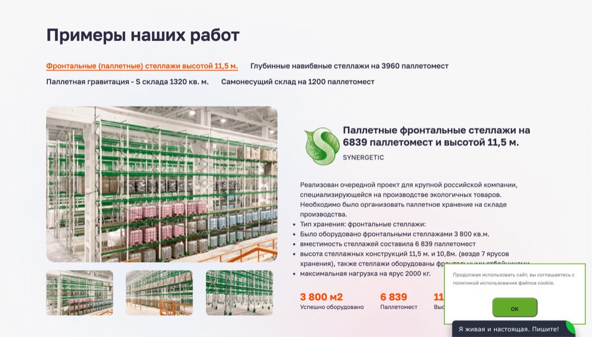
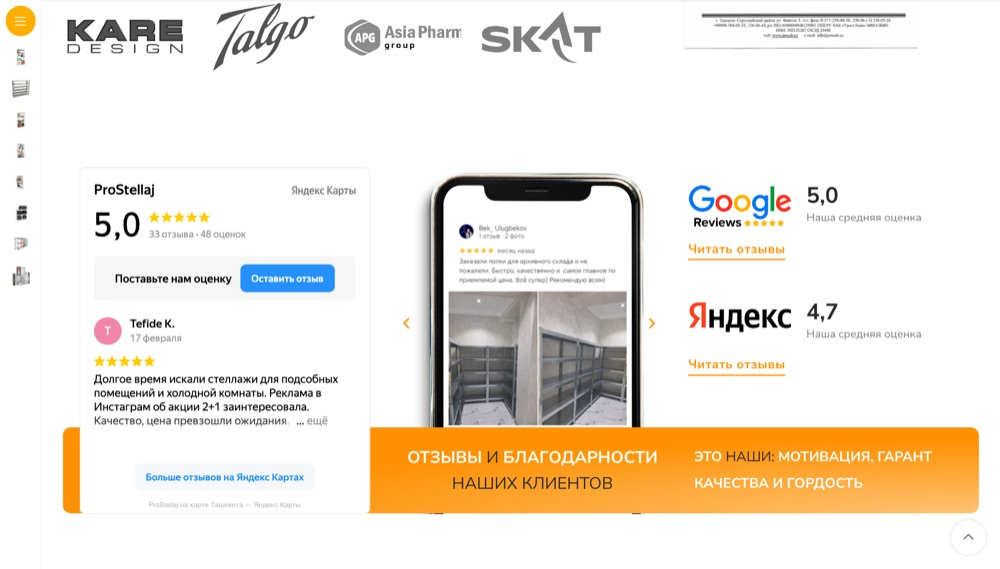
Копировать элементы по одному — значит собрать чужой сайт из деталей. Поэтому библиотека была сжата до восьми ходов: это уже не «что добавить», а «что изменить в самом способе разговора с клиентом». Дизайн третьей части сделан по ним.
Квиз «что вы знаете» и конфигуратор со спецификацией: цена и паллетоместа считаются до звонка. Прямое следствие разбора пяти звонков — ноль продаж при пяти тёплых лидах.
Клиент думает не «секциями», а «сколько паллет влезет». Цена за паллетоместо — единственная величина, в которой два предложения вообще сравнимы.
3D-ядро расчёта, десятилетняя гарантия документом, три ISO, 1000+ проектов. Всё это существовало, но не было предъявлено. Самый дешёвый ход из восьми.
«Полный цикл» проверить нельзя, «привезём завтра» — можно. Срок делает обещание фальсифицируемым, а значит — убедительным.
Таблица нагрузок, схема элементов, «что получаете на руки». Человек не должен спрашивать «а выдержит?» — ответ должен встретиться раньше вопроса.
«Паллетный фронтальный» — слово продавца. «Для склада», «для магазина», «для архива» — слово покупателя. Вторая ось навигации.
Паспорт изделия, акт монтажа, гарантийный талон, инженер по имени. Страх №6 — это страх неизвестности, а не страх цены.
PDF-спецификация из конфигуратора. У RaxPro это уже умеет генератор КП — вторая презентация целиком про него.
Ход №1. Все прочие его обслуживают. Пока ответ на «сколько влезет и сколько стоит» живёт в голове менеджера, сайт остаётся визиткой, а конверсия зависит от того, кто снял трубку — и разбор звонков показывает, чем это заканчивается.
Разведка даёт не только приёмы, но и предупреждения. Всё перечисленное ниже встречено на реальных сайтах из доски и сознательно не повторено. Часть из этого выглядит «как у всех» — и именно поэтому проскакивает без обсуждения.
| # | Ошибка | Где встречена | Чем она стоит денег |
|---|---|---|---|
| 01 | Cookie-стена на пол-экрана | mecalux, regalraum, ar-racking | Первый экран уходит под баннер согласия. Для Узбекистана такой баннер не обязателен — и не поставлен. |
| 02 | Поп-ап «скидка 10 %» поверх конфигуратора | shelving.com | Прерывает работу ровно в момент, когда человек считает свой склад. Это самый ценный посетитель на сайте. |
| 03 | Капча поверх формы | lkw-safe.kz | Форма физически недоступна. Вместо капчи — скрытое поле-ловушка и ограничение частоты. |
| 04 | Белые рендеры без контекста в карточках | prostellaj, imebkz | Стеллаж на белом фоне не даёт масштаба. На новых карточках — стеллаж в работающем помещении. |
| 05 | SEO-простыня вместо страницы | innotek | Текст написан для робота. Человек уходит, не долистав до сути. |
| 06 | Сайт, закрытый от роботов | aviastal (403) | Выпадает из поиска по картинкам — теряется бесплатный трафик. |
| 07 | Один движок у всех площадок региона | almaty.gmsatu, promet.uz, stellazh.kz | Узнаётся как шаблон с первого экрана. Доверие падает до того, как прочитан заголовок. |
| 08 | Чат-виджет, cookie и «я живая» одновременно | 1logistik | Три перекрытия на одном экране. Каждое по отдельности разумно, вместе — шум. |
Каждая ошибка сделана ради своей локальной пользы: юристы просили баннер, маркетинг — поп-ап, безопасность — капчу. Ни одна не была решением про клиента. Поэтому анти-паттерны и выписаны отдельным списком: их приносят не дизайнеры, а смежные отделы, и отбивать их нужно заранее.
Сайт снят целиком — каждый блок отдельным файлом, на компьютере и на телефоне. Дальше: что на нём работало, что мешало и какие утверждения спорят друг с другом в пределах одного скролла.
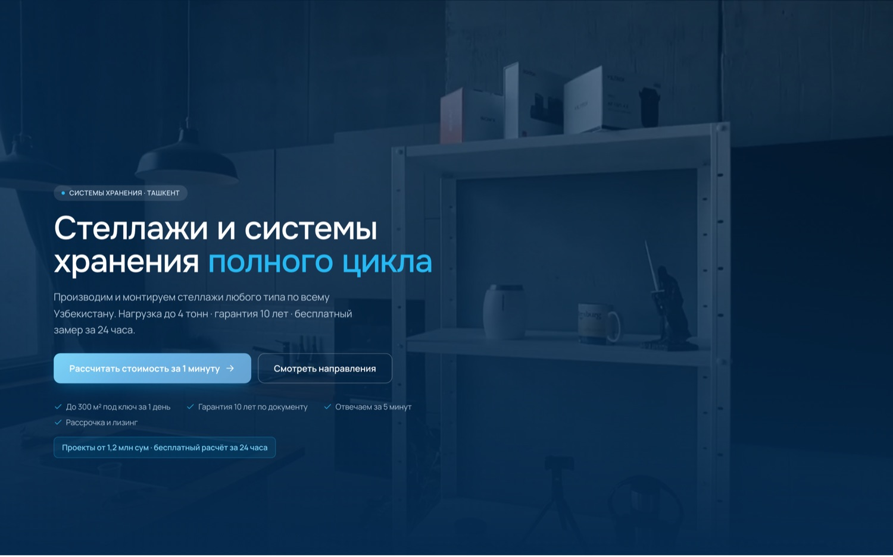
Человек с вопросом «сколько товара влезет в мой склад» не получал даже намёка, что здесь на этот вопрос отвечают. Он видел, что компания серьёзная, — и шёл сравнивать цены туда, где они написаны. По доске конкурентов это prostellaj.uz.
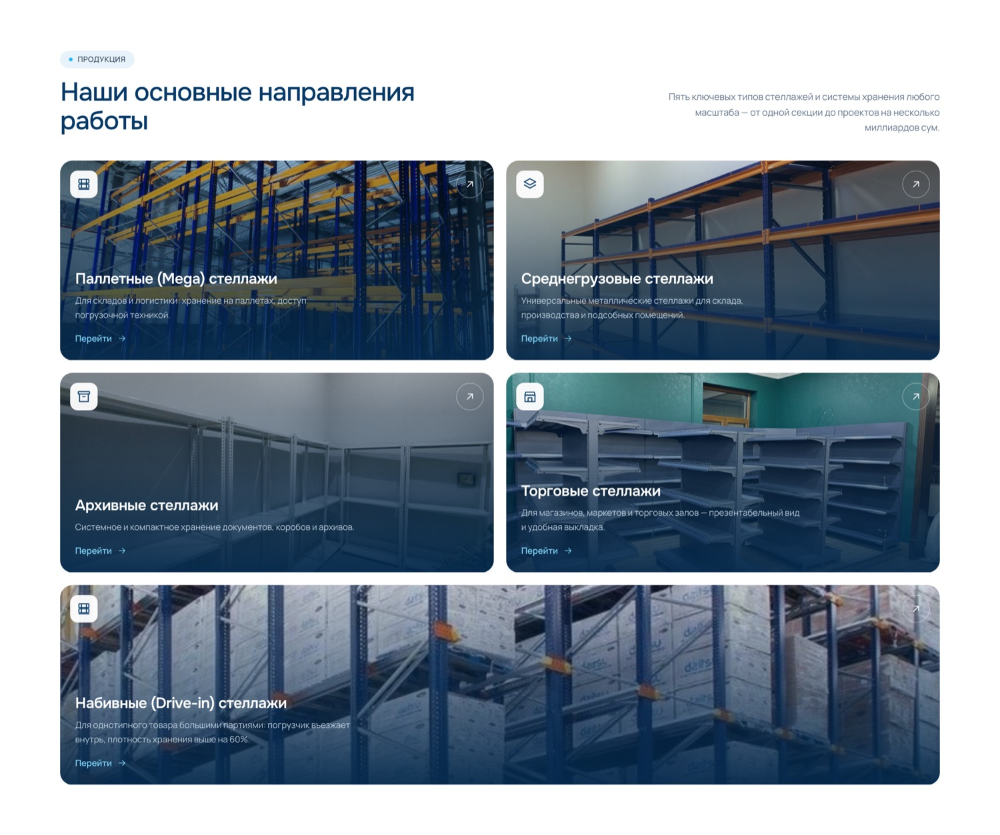
Карточка типа — это место, где человек понимает «моё / не моё». Без нагрузки и цены решение не принимается, и весь блок работает как оглавление, а не как выбор.
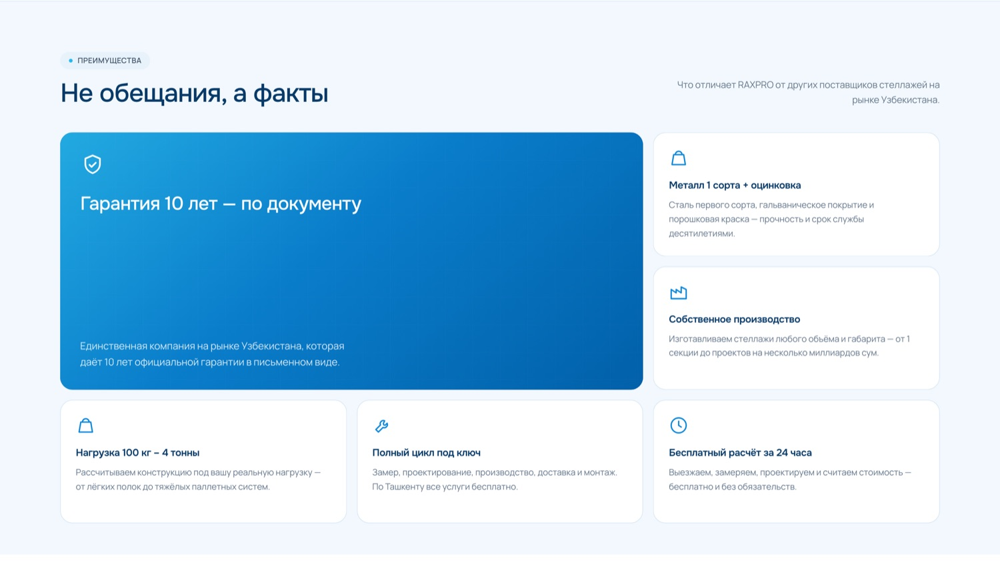
Блок, обещающий факты вместо обещаний, состоял из обещаний. Клиент, который проверит «собственное производство» одним вопросом менеджеру, теряет доверие ко всей странице, а не к одной карточке.
Он сделан аккуратно. Там правильная типографика, приличная сетка, ровные отступы. Проблема не в оформлении, а в том, что именно оформлено: страница рассказывает о компании там, где клиенту нужно решение про его собственное помещение.
Отсортированы не по тяжести исправления, а по тому, сколько сделок каждая стоит. Столбец «страх» ссылается на список из семи вопросов на полосе 06.
| # | Проблема | Страх | Почему это дорого | Решено |
|---|---|---|---|---|
| 01 | Нет ни одной цены на главной, кроме плашки «от 1,2 млн» | 1 | Человек не может сравнить и уходит туда, где цены есть. Это единственное, в чём prostellaj.uz реально сильнее | Цена за секцию на всех шести карточках + блок состава цены |
| 02 | Нет ответа на «сколько влезет в моё помещение» | 3 | Главный вопрос целевого сегмента. Ядро расчёта в компании существовало, но на сайт не выходило | Первый экран про вместимость, калькулятор, конструктор |
| 03 | Заголовок первого экрана не проверяем | 4 | «Полного цикла» ничего не обещает и ничем не рискует. Обещание без срока не работает | «150 тонн на складе — привезём завтра» |
| 04 | «Производим» против «всё в наличии» | 5, 7 | Противоречие видно за один скролл. Пойманное клиентом — обесценивает и остальные утверждения | 91 замена по всему сайту на «поставляем со склада в Ташкенте» |
| 05 | Карточки направлений без нагрузки, размеров и «для кого» | 2, 3 | Выбор типа стеллажа — первое решение клиента. Принять его на старых карточках было нечем | Цена, нагрузка, высота, «для кого» и две кнопки на каждой |
| 06 | Пять типов вместо шести: мезонина нет | 3 | Продукт продаётся, но на сайте не существует. Запрос уходит конкуренту | Шестая карточка и страница в каталоге |
| 07 | Текст поверх фотографий | — | Ни текст, ни фотография не читаются. Фото приходится затемнять на 60 %, то есть оно уже не нужно | Фото и описание разведены в разные зоны карточки |
| 08 | Пустые блоки при первой загрузке | — | Анимация появления срабатывала по скроллу: робот поисковика и человек с медленным интернетом видели пустые экраны | Содержимое видно сразу, анимация — поверх видимого состояния |
| 09 | «Нагрузка 100 кг – 4 тонны» | 2 | Диапазон в сорок раз не снимает страх обрушения, а создаёт его: значит, никто не считал | «4 т на ярус» отдельной карточкой + пять пунктов безопасности |
| 10 | Отзывы без должности и компании | 5 | «Партнёр» — это никто. Отзыв без имени компании не работает как доказательство | Витрина отобранных отзывов, полная страница отдельно |
| 11 | Не сказано, что будет после заявки | 6 | Страх спама и тишины — причина не отправлять форму даже у готового клиента | Колонка рядом с формой: срок ответа, расчёт, выезд |
| 12 | Нет кейсов с цифрами | 3, 5 | Объекты такие есть — 11 штук с площадями и паллетоместами. На сайте они были фотографиями без чисел | Слайдер объектов с площадью, паллетоместами и сроком |
Это отдельная находка разбора: не «плохо сформулировано», а взаимоисключающе. Все четыре пары видны в пределах одного скролла или одного перехода. Каждая из них — готовый вопрос, который клиент задаст менеджеру, и на который у менеджера нет ответа.
«Производим» — в первом экране, в заголовке вкладки и в описании «Завод RaxPro»
«Изготовление на заводе-партнёре» и одновременно «всё в наличии, завод не ждём»
Почему это хуже всего: своего производства нет, а первый экран обещает завод. При этом главный оффер — «не надо ждать завод». Одно предложение отменяет другое.
Решено: 91 замена по всему сайту. Везде — «поставляем со склада в Ташкенте», партнёрский завод назван честно и с ISO.
«Монтаж по Ташкенту бесплатно» — в блоке этапов и в FAQ
«Монтаж — от N сум» в расчёте стоимости
Почему это дорого: клиент считает по первой формулировке, счёт приходит по второй. Это спор на этапе подписания, а не на этапе выбора.
Решено: в блоке состава цены прямо написано, что входит в цену секции, а что считается отдельно.
«Единственная компания на рынке» с гарантией 10 лет
Stellmart даёт до 7 лет даже на б/у; гарантию на письменном документе даёт не одна компания
Почему это риск: непроверяемое превосходство легко опровергается одним поиском — и тогда под сомнение попадает вся остальная страница.
Решено: формулировка заменена на проверяемую: «10 лет по договору. На рынке обычно — до 5».
«Нагрузка 100 кг – 4 тонны» в преимуществах
В двух записанных звонках менеджер называл 400 кг как максимум
Почему это опасно буквально: речь о нагрузке над головами людей. Расхождение сайта и менеджера в десять раз — это не маркетинг, а безопасность.
Решено: «до 4 т на ярус» вынесено отдельной карточкой с пятью пунктами безопасности. Требует подтверждения RaxPro: 4 т или 3,5 т.
Дальше — каждый экран нового сайта настоящим снимком, и к каждому один вопрос: какую работу этот блок делает за менеджера. Блок, который не отвечает на этот вопрос, на странице не появился.
Решение про главную картинку принималось не «что красивее», а из ограничений проекта. Их было четыре, и каждое отсекало один класс решений.
Значит, на первом экране не может быть ни цеха, ни сварки, ни станка. Всё, что показывает завод, — ложь про компанию, которая возит со склада. Это сразу вычеркнуло стоковую индустриальную фотографию — то есть ровно то, что стояло на старом сайте.
Объектов много, но снимали их на телефон в рабочем порядке: смешанный свет, случайный кадр, коробки в проходе. Такой кадр не выдерживает размера в полэкрана. Ставить чужой красивый склад — снова обещание, которого нет.
Заголовок говорит «больше товара на той же площади». Это утверждение о геометрии: ряды, ярусы, проходы, высота. Фотография показывает атмосферу, но не показывает геометрию. Нужен объект, который можно рассмотреть.
Компания считает раскладку по помещению — это её настоящее отличие от конкурентов. Первый экран должен намекать именно на это: что здесь считают, а не просто продают железо.
Осталось одно решение: трёхмерная сцена стеллажного ряда, собранная нами. Она ничего не обещает про завод, показывает ровно ту геометрию, о которой идёт речь в заголовке, принадлежит проекту целиком и меняется вместе с ним. Плюс побочный эффект: ни у одного конкурента в Узбекистане на первом экране нет собственного трёхмерного объекта — по доске из 45 сайтов таких нет вообще.
Варианты живут на одном адресе и переключаются параметром ?hero= — их можно открыть рядом в двух вкладках и сравнить на своём экране, а не по описанию. Ниже — реальные снимки всех трёх.
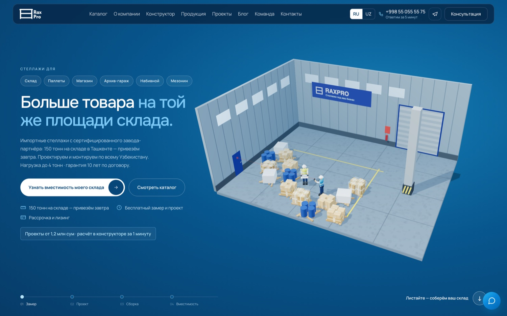
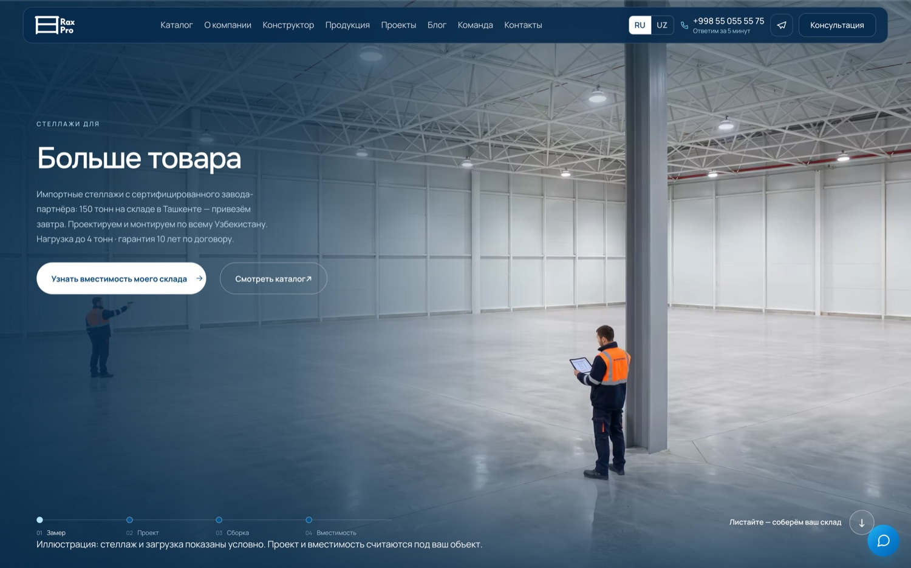
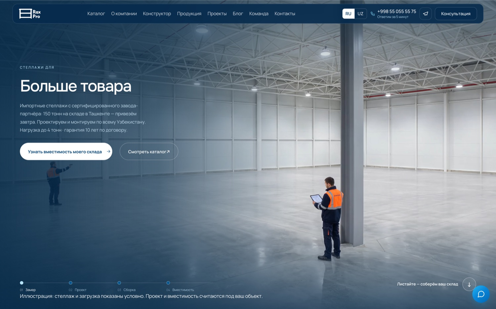
| Критерий | 3D-сцена | Видеофон | mp4 |
|---|---|---|---|
| Показывает геометрию | да, объект вращается и рассматривается | нет, общий план | нет, общий план |
| Правдив про компанию | да, ничего не обещает | да, если кадр свой | да, если кадр свой |
| Вес и скорость | тяжелее: движок и сцена | тяжелее всего | легче всех |
| Поведение на телефоне | анимация ускорена после правки | автовоспроизведение не везде | предсказуемо |
| Отличается от конкурентов | ни у кого из 45 | типовой приём | типовой приём |
| Меняется вместе с продуктом | да, сцена наша | нужна пересъёмка | нужна пересъёмка |
Основной — 3D. Видеоварианты оставлены живыми не «на всякий случай», а как запасной путь: если на реальном трафике окажется, что мобильный посетитель уходит до конца загрузки сцены, переключение занимает один параметр, а не новый спринт. Перед боевым запуском переключатель убирается, остаётся один вариант.
| Элемент | Было | Стало | Что это меняет в разговоре |
|---|---|---|---|
| Заголовок | «Стеллажи и системы хранения полного цикла» | «Больше товара на той же площади склада.» | Первая строка совпадает с Core Job сегмента B, а не с описанием компании |
| Подзаголовок | «Производим и монтируем» | «Импортные стеллажи с сертифицированного завода-партнёра: 150 тонн на складе в Ташкенте — привезём завтра» | Проверяемое обещание со сроком вместо непроверяемого статуса. Завод назван чужим прямым текстом |
| Изображение | стоковое фото сварки, затемнено на 60 % | собственная 3D-сцена стеллажного ряда | Видна геометрия, о которой говорит заголовок; ничего не обещает про завод |
| Выбор типа | нет | шесть чипов с типами стеллажей | Человек с первого экрана попадает в свой сценарий, а не в общий каталог |
| Действие | «Оставить заявку» и «Каталог» — обе про компанию | «Узнать вместимость моего склада» ведёт в направления, вторая — в каталог | Кнопка названа словами задачи клиента, а не словами отдела продаж |
| Цена | плашка «от 1,2 млн» внизу | цена появляется в карточке каждого типа | Цена привязана к выбору клиента, а не висит абстрактным «от» |
Порядок собран по логике сделки, а не по привычной схеме лендинга: сначала снимаем страх «подойдёт ли мне», потом «сколько это стоит», потом «можно ли вам верить», и только в конце просим контакт. Столбец «страх» — из списка на полосе 06.
| # | Блок | Страх | Работа, которую он снимает с менеджера |
|---|---|---|---|
| 01 | Первый экран | 1, 3 | Сказать, чем компания полезна этому человеку, и дать выбрать свой тип |
| 02 | Клиенты и цифры | 5 | Показать, что компания работает с известными именами, до всякого текста |
| 03 | Направления | 2, 3 | Дать выбрать тип стеллажа по нагрузке, высоте и цене без звонка |
| 04 | Из чего складывается цена | 1 | Ответить на «почему столько» до того, как клиент решит, что дорого |
| 05 | Этапы работы | 6 | Показать, что будет после заявки: замер, расчёт, монтаж, сроки |
| 06 | Объекты | 3, 5 | Дать сопоставимый пример: площадь, паллетоместа, срок |
| 07 | Почему RaxPro | 2, 5, 7 | Собрать проверяемые факты в одном месте: наличие, гарантия, нагрузка |
| 08 | Калькулятор | 1, 3 | Посчитать вместимость и порядок суммы — главный вопрос сегмента B |
| 09 | Заводские против кустарных | 2, 7 | Отработать «у сварщика дешевле» — самое частое возражение на звонке |
| 10 | Основатель | 5 | Поставить за компанией живого человека с именем и лицом |
| 11 | Отзывы | 5 | Показать, что говорят клиенты, с указанием объекта и типа стеллажа |
| 12 | Сертификаты | 2 | Подтвердить качество металла документом, а не прилагательным |
| 13 | Вопросы и ответы | 1, 4, 6 | Снять остаток мелких вопросов, которые иначе станут поводом не писать |
| 14 | Форма заявки | 6 | Попросить контакт, назвав рядом, что произойдёт дальше и за какой срок |
| 15 | Контакты | 6 | Дать прямой канал тем, кто не пишет в формы |
| 16 | Статьи | 3 | Подобрать поисковый трафик по запросам «как увеличить вместимость» |
| 17 | Подвал | — | Реквизиты, языки, ссылки на типы и правовые страницы |
Главный порядковый сдвиг против старого сайта: калькулятор с девятнадцатого экрана поднялся на восьмой, направления с обычного перечисления стали решением с ценой, а «Нам доверяют» переехало из середины на вторую позицию — логотипы работают, только пока человек ещё решает, стоит ли читать дальше.
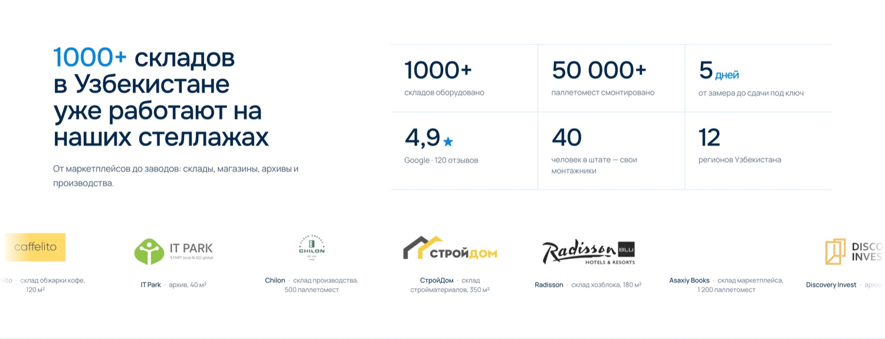
Второй экран — место, где человек решает, читать ли дальше. Логотипы Radisson, Asaxiy, IT Park, MIDEX и цифры компании отвечают на «вы вообще кто» за две секунды и без единого прилагательного.
Логотипы стояли отдельным блоком без цифр, а «RAXPRO в цифрах» — далеко ниже, на тёмном экране. Оба работали вполсилы: доверие набирается один раз и сразу.
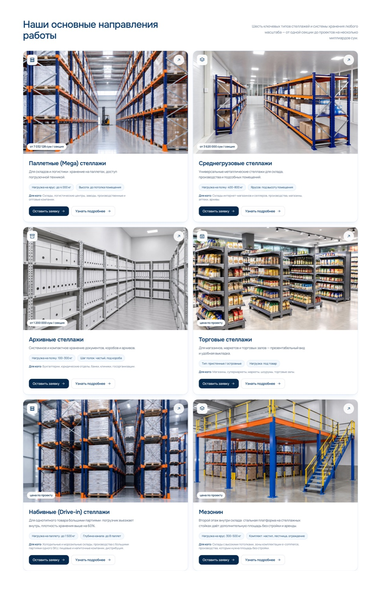
Это главный экран выбора. Шесть типов, и на каждой карточке ровно то, чем человек решает: цена за секцию, нагрузка на ярус, высота, «для кого» и две кнопки — подробно и рассчитать. Мезонин появился шестым: его продавали, но на сайте не показывали.
Пять карточек, текст поверх тёмных фотографий, ни цены, ни нагрузки, одна ссылка «Перейти».
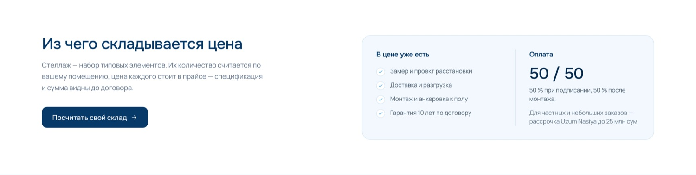
Возражение «дорого» рождается не из суммы, а из непонимания, за что она. Блок разбирает цену секции на части — металл, покрытие, комплектующие, доставка, монтаж — и отдельно называет, что не входит. Это снимает спор на этапе счёта, о который спотыкались два разобранных звонка.
Блока не существовало. Единственное упоминание цены — «от 1,2 млн сум» под первым экраном, без расшифровки.
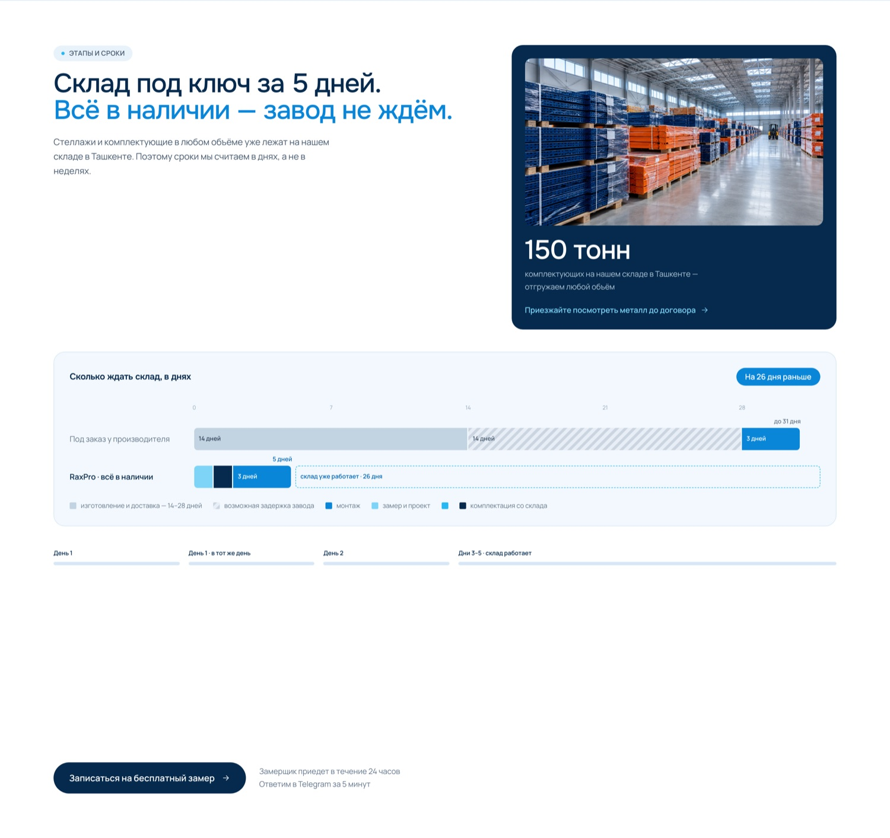
Страх №6 — «что будет после заявки». Этапы отвечают на него до формы, а не после: замер, расчёт и спецификация, согласование, поставка, монтаж. У каждого шага — срок. Человек видит процесс целиком и понимает, во что ввязывается.
Этапы упоминались текстом в блоке «о компании» вместе с формулировкой «по Ташкенту все услуги бесплатно», которая спорила с прайсом на монтаж.
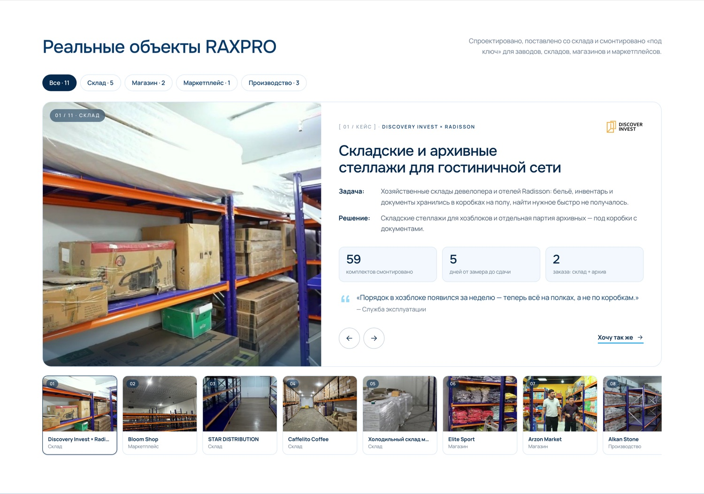
Клиент сегмента B решает не «нравится ли», а «похоже ли на мой случай». Поэтому в слайдере не фотогалерея, а сопоставимые параметры: площадь, паллетоместа, тип, срок. Одиннадцать объектов с числами в базе есть — их собрали из канала отзывов.
Фотографии объектов без единой цифры. При этом самый сильный факт компании — «с 150 до 650 паллет без расширения площади» — лежал в карточке статьи в самом низу страницы.
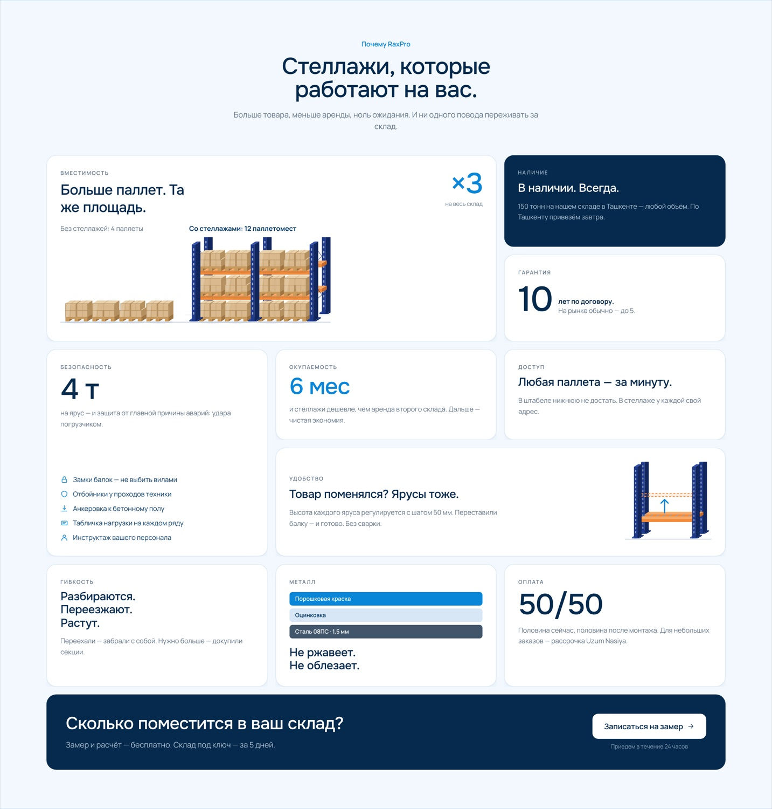
Плитка разного размера вместо шести одинаковых карточек: крупное — то, что решает (наличие на складе, гарантия по документу, нагрузка на ярус), мелкое — поддерживающее. Каждый пункт проверяем: документом, складом или прайсом.
Два блока подряд про одно и то же: «Качественные стеллажи увеличивают доход» с тремя общими карточками и «Не обещания, а факты» — где первой карточкой стояло несуществующее собственное производство.
Это перенесённый в интерфейс первый вопрос менеджера. Человек вводит размеры помещения и получает вместимость и порядок суммы. Считает то же ядро, которое считает коммерческие предложения, — не отдельная «маркетинговая» формула.
Калькулятор существовал, но стоял третьим блоком и считал упрощённо, без связи с прайсом.
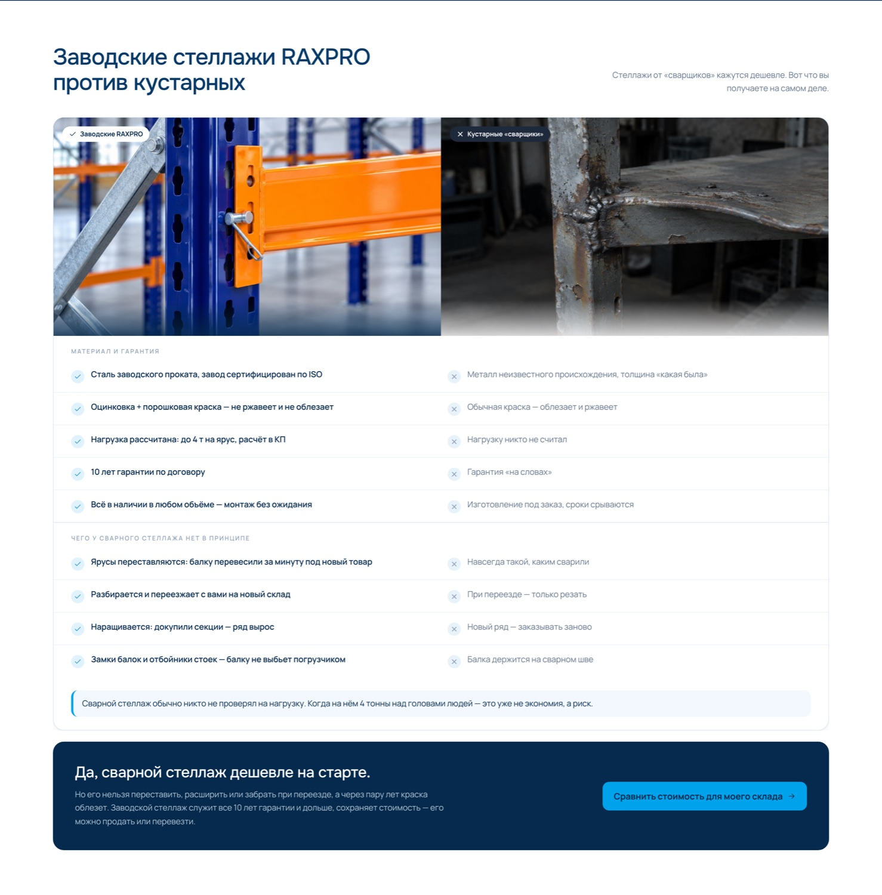
Самое частое возражение на разобранных звонках — «у сварщика дешевле». Блок не спорит с этим, а соглашается: «Да, сварной стеллаж дешевле на старте» — и дальше показывает девять пар и фотографию сварного шва. Признанное возражение снимается, отрицаемое — усиливается.
Такой блок был: шесть пар, две карточки, без фотографии и без признания возражения. Сравнение читалось как реклама, а не как разбор.
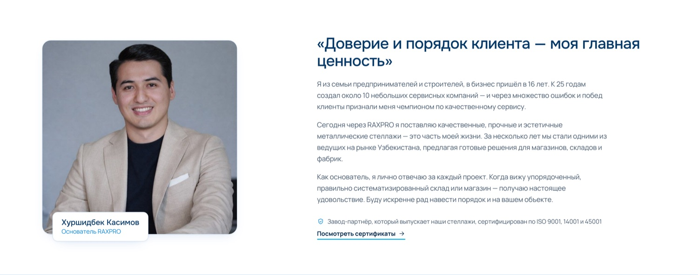
За компанией стоит имя и лицо — на рынке, где половина продавцов безымянна, это само по себе довод. Блок отвечает на страх №5 «не исчезнут ли они через год».
Блок был, но без прямой речи и без роли в сделке — просто портрет.
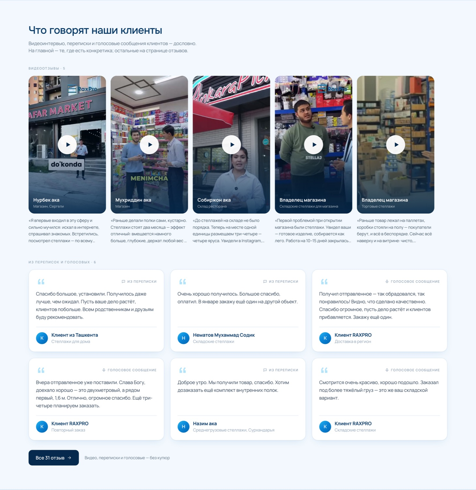
Витрина отобранных отзывов с типом стеллажа и объектом; полный список — отдельной страницей. Источник настоящий: Telegram-канал отзывов, откуда взяты 31 расшифрованный отзыв и 11 кейсов.
Шесть карточек с подписями «Клиент из Ташкента», «Постоянный клиент», «Клиент RAXPRO». Отзыв без имени объекта не работает доказательством.
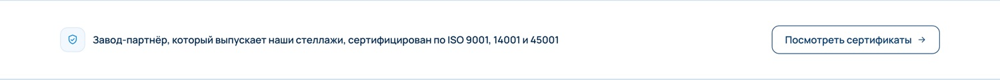
«Металл 1 сорта» — прилагательное, пока рядом нет документа. Блок переводит качество из обещания в бумагу, которую можно открыть и увеличить.
Качество металла утверждалось словами в трёх разных блоках; документов на странице не было.
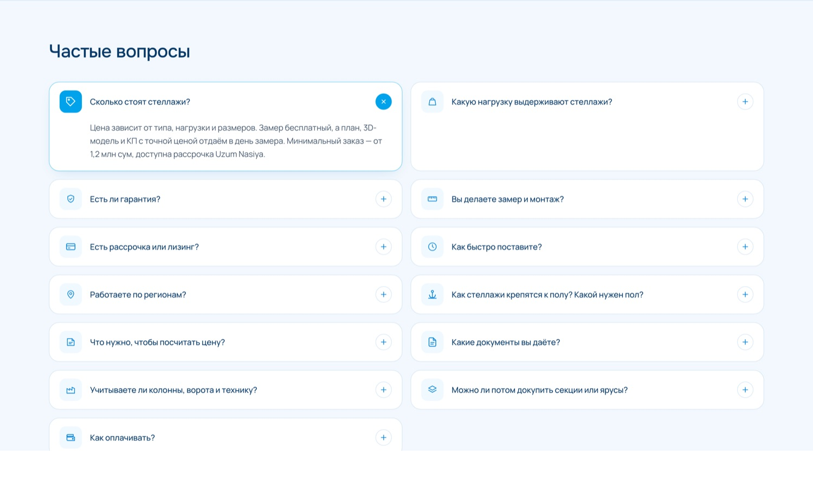
Вопросы собраны не «как принято», а из пяти разобранных звонков и переписок канала: сроки, монтаж, доставка в регионы, нагрузка, гарантия, б/у. Каждый ответ — конкретный, без «свяжитесь с менеджером».
Список вопросов был, часть ответов отсылала к менеджеру — то есть возвращала клиента ровно в то место, где сделки и терялись.
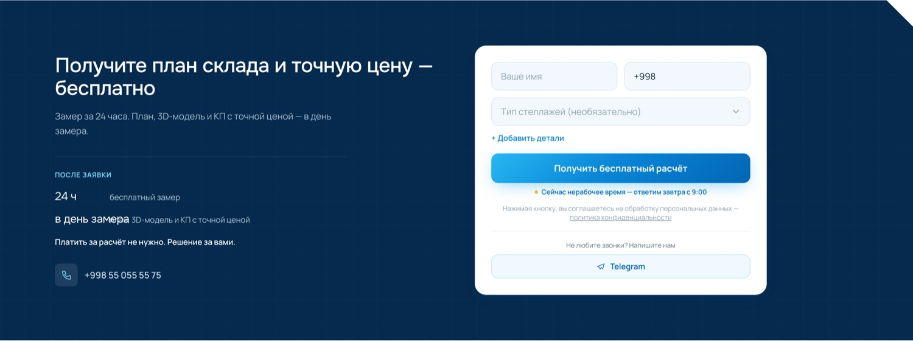
Рядом с формой — колонка «что дальше»: срок ответа, что пришлёт менеджер, когда выезжает замерщик. Полей минимум; всё, что можно не спрашивать, не спрашивается.
Форма без объяснения, что произойдёт после отправки. Страх спама — обычная причина не писать даже у готового клиента.
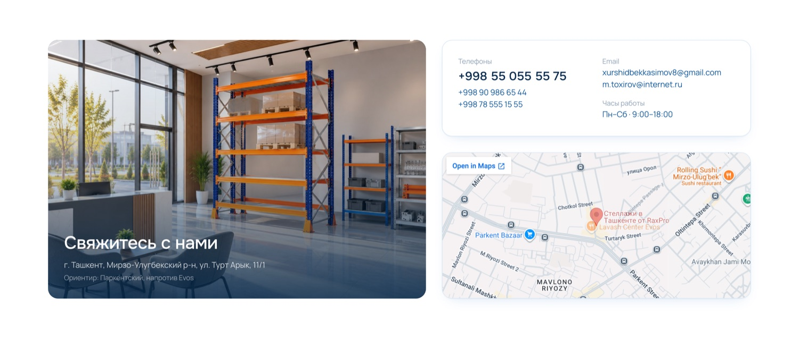
Контакты — прямые каналы для тех, кто не пишет в формы. Статьи работают на поиск: «как увеличить вместимость склада» — запрос ровно того человека, ради которого переделан первый экран.
В блоке статей все три обложки не загружались — на боевом сайте стояли пустые голубые прямоугольники. Заголовки написаны для поисковика: «Паллетные стеллажи | RAXPRO».
Страница целиком, разрезанная на двенадцать вертикальных срезов и уложенная слева направо: так видно ритм — где густо, где пусто, где повторы. Восемь из десяти заявок приходят с телефона, поэтому проверка шла здесь, а не на большом экране.
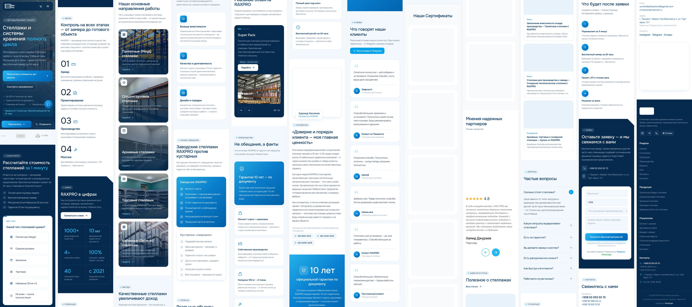
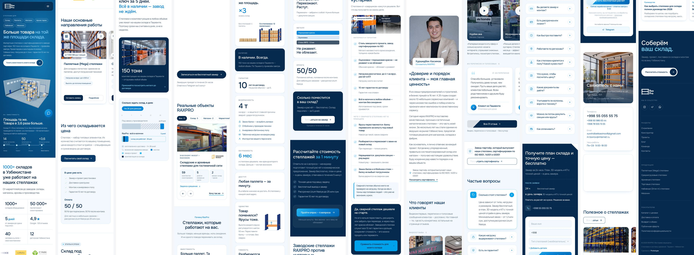
На большом экране новая главная длиннее старой в полтора раза, а на телефоне — короче. Блоки перестроены под узкую колонку, а не сжаты из десктопных.
Порядок блоков тот же, что на десктопе. Мобильная версия не урезана: на телефоне доступны и калькулятор, и конструктор, и все шесть типов с ценами.
Каждая — целиком, полосой. Главная не обязана отвечать на всё: её работа — довести до нужной страницы человека, который уже знает, что ищет.
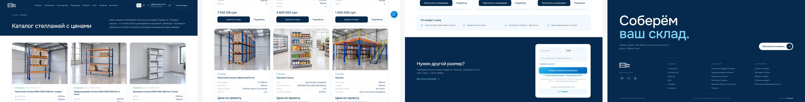
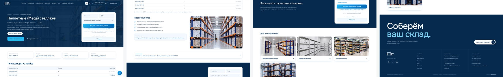
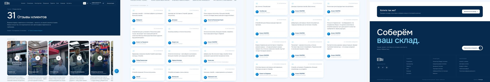
Ниже — настоящий проход по конструктору на реальном превью, снятый как есть. Помещение 24 × 18 м, потолок 7 м, колонны внутри, ричтрак, паллета 800 кг. Ни одно число на этих снимках не нарисовано.
Красивый сайт копируется за месяц. Работающий расчёт — нет: за ним правила раскладки, прайс и паспорта типов. По доске из 45 сайтов онлайн-расчёта паллетных стеллажей в Узбекистане нет ни у кого.
Паллетоместа, план расстановки, трёхмерную модель, спецификацию и сумму. Человек приходит в разговор с готовыми числами — и обсуждает сроки, а не «сколько это примерно стоит».
Не выдаёт окончательную цену вместо менеджера и не прячет допущения: черновое число помечено черновым. Конструктор доводит до предметного разговора, а не заменяет проектировщика.
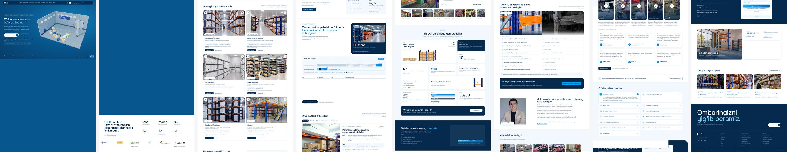
Значительная часть объектов — регионы, где решение принимает человек, читающий по-узбекски. По разбору канала отзывов регионы дали примерно двадцать объектов из шестидесяти шести, и половина региональных записей звучит как «отправлено», а не «смонтировано» — то есть клиент собирал сам, по документам и описанию.
Для такого клиента язык страницы — это не вежливость, а понятность инструкции. Плохой перевод здесь стоит не имиджа, а заказа.
Техническая сторона: язык — часть адреса (/ru и /uz), а не переключатель в куках. Каждая страница на каждом языке имеет свой адрес, индексируется отдельно и делится ссылкой без потери языка. Тексты лежат в отдельных файлах: правка формулировки не требует трогать вёрстку.
Две версии рядом по тридцати пунктам, прогноз конверсии с открытыми допущениями — и честный список того, что осталось за рамками этой работы.
| Пункт | Было | Стало |
|---|---|---|
| Позиционирование | ||
| Обещание первого экрана | «системы хранения полного цикла» — о компании | «больше товара на той же площади» — о задаче клиента |
| Кто производит | «производим» и «завод-партнёр» одновременно | поставляем со склада в Ташкенте, завод-партнёр назван прямо |
| Целевой сегмент | не выделен: обращение ко всем сразу | коробочный склад — 56 % объектов по разбору канала |
| Отличие от рынка | «единственные даём 10 лет» — опровергается поиском | расчёт вместимости онлайн — у конкурентов в стране нет |
| Цена и расчёт | ||
| Цена на главной | одна плашка «от 1,2 млн сум» | цена секции на каждой из шести карточек |
| Состав цены | не объяснён | отдельный блок: что входит и что считается отдельно |
| Условия оплаты | «рассрочка» без условий | 50/50, рассрочка Uzum Nasiya до 25 млн сум |
| Калькулятор | есть, упрощённый, не связан с прайсом | считает то же ядро, что и коммерческие предложения |
| Конструктор | нет | раскладка по контуру помещения, спецификация, 3D |
| Товар | ||
| Типов стеллажей | 5 карточек, мезонина нет | 6 типов, у каждого своя страница |
| Данные в карточке | название и ссылка «Перейти» | цена, нагрузка, высота, «для кого», две кнопки |
| Каталог | витрина с корзиной интернет-магазина | каталог с фильтром по типу, корзина убрана |
| Нагрузка | «100 кг – 4 тонны» диапазоном в сорок раз | до 4 т на ярус + пять пунктов безопасности |
| Доверие | ||
| Отзывы | 6 карточек, подписи «Клиент из Ташкента» | 31 отзыв: видео, переписки, голосовые — с объектом и типом |
| Объекты | фотографии без цифр | 11 объектов с площадью, паллетоместами и сроком |
| Сертификаты | упоминались словами | документы завода-партнёра: ISO 9001, 14001, 45001 |
| Команда | нет | страница с именами и ролями |
| Пункт | Было | Стало |
|---|---|---|
| Путь к заявке | ||
| Что будет после заявки | не сказано | замер за 24 ч, план и 3D-модель с ценой — в день замера |
| Вопросы и ответы | часть ответов отсылает к менеджеру | 13 вопросов из реальных звонков, ответы конкретные |
| Возражение «у сварщика дешевле» | сравнение без признания возражения | «Да, сварной дешевле на старте» — и девять пар следом |
| Вход в расчёт | только форма | опрос из четырёх вопросов, меньше минуты, без звонка |
| Техника | ||
| Высота главной, десктоп | 14 455 px | 20 630 px — содержания больше |
| Высота главной, телефон | 26 046 px | 21 526 px — на 17 % короче |
| Содержимое при загрузке | блоки пустые до прокрутки | видно сразу, анимация поверх видимого состояния |
| Картинки в блоге | три обложки не загружались | реальные изображения, заданные размеры |
| Языки | две версии, узбекская переведена построчно | обе версии написаны отдельно, язык в адресе |
| Заголовки страниц | «Паллетные стеллажи | RAXPRO» — под поисковик | человеческие заголовки, разметка отдельно |
| Правдивость | ||
| Противоречий на странице | четыре, видны за один скролл | ни одного из четырёх не осталось |
| Непроверяемых утверждений | «единственные», «любой объём», «всё бесплатно» | заменены на проверяемые: срок, документ, прайс |
| Источник цифр | написаны в вёрстке по месту | из прайса и правил расчёта; черновые помечены |
Тридцать один пункт, и ни один не про «стало красивее». Вёрстка старого сайта была аккуратной — переделывали не оформление, а то, о чём страница говорит и на какие вопросы отвечает.
У старого сайта нет счётчика с историей конверсии, к которому мы имели бы доступ. Значит, «было 1,2 %, станет 3,5 %» — цифра из воздуха, и мы её не называем. Ниже — рассуждение о механике: где именно поток терялся и какой из этих потерь новая версия касается. Проверяется это первым же месяцем реального трафика.
| Утечка | Почему она была | Чем закрыта |
|---|---|---|
| Уход с первого экрана | заголовок не совпадал ни с одним запросом клиента | обещание про вместимость + шесть типов сразу |
| Уход к конкуренту за ценой | цены на сайте не было — её искали там, где есть | цена секции в каждой карточке и состав цены блоком |
| Заявка не отправлена | неясно, что будет дальше и не начнут ли звонить | «после заявки» рядом с формой: сроки и содержание |
| Сделка потеряна на звонке | менеджер отвечал разное и ошибался в нагрузке | расчёт и цифры вынесены в интерфейс, до звонка |
| Потеря доверия по ходу | четыре взаимоисключающих утверждения на странице | противоречия сняты, непроверяемое заменено |
Качество заявки. Человек, дошедший до формы через калькулятор, уже знает площадь, тип и порядок суммы. Это другой разговор с первой минуты.
Поисковый трафик. Новые страницы типов и статьи индексируются неделями, и первые данные будут месяца через два, не раньше.
Разбор звонков показал: пять из пяти тёплых и горячих лидов не купили. Часть этой потери — в скрипте и в самом менеджере, а не в странице.
Список неполный намеренно: сюда вынесено только то, что нельзя закрыть без RaxPro, и то, что сознательно отложено. Мелкие правки в него не входят.
| # | Шаг | Зачем |
|---|---|---|
| 01 | Убрать переключатель вариантов первого экрана | Оставить один вариант: параметр в адресе на боевом сайте лишний |
| 02 | Подтвердить или заменить черновые числа | Ни одна непроверенная цифра не должна попасть на рабочий домен |
| 03 | Перенос со старого сайта: адреса и перенаправления | Старые страницы уже в поиске; без перенаправлений их вес теряется |
| 04 | Счётчик и цели | Без них разговор о конверсии через месяц снова будет умозрительным |
| 05 | Приёмка на 320 / 768 / 1440 и по скорости | Проверяется автоматически, отчёт приходит сразу после выкладки |
Старая версия приводила человека к менеджеру с нулём информации: без цены, без вместимости, без понимания, что будет дальше. Разговор начинался с пустого места — и пять записанных звонков показывают, чем это заканчивалось.
Новая версия приводит человека, который уже посчитал свой склад, увидел цену и выбрал тип. Ему остаётся один вопрос — когда приедет замерщик.